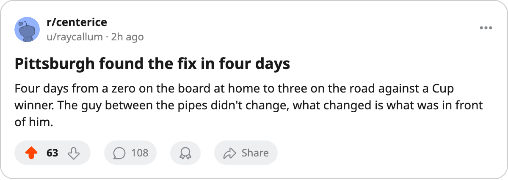
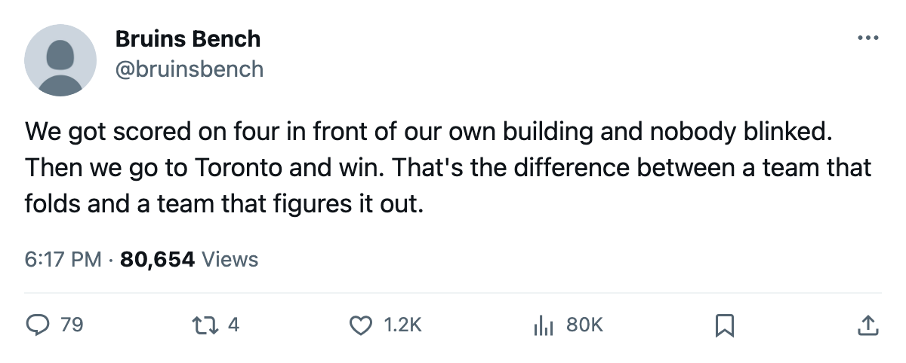

SERIES CHECK: Pittsburgh split the Toronto series in 4 days, and the next one is December 10
The Penguins are the only club with a win over the Cup champions, and they found the answer between a 4-0 home loss and a 3-1 road win
 Ray CallumSenior correspondent · Home Ice Network
Ray CallumSenior correspondent · Home Ice Network
 Pittsburgh Penguins beat
Pittsburgh Penguins beat  Toronto Maple Leafs 3-1 on October 14 at the Air Canada Centre, 22 shots to 24, outshot and winning. Four days earlier, the same Penguins had lost 0-4 at home to the same Maple Leafs on 29 shots. They are 1-1 in the season series, the only club in the league to have faced Toronto twice and the only one with a regulation win over them.
Toronto Maple Leafs 3-1 on October 14 at the Air Canada Centre, 22 shots to 24, outshot and winning. Four days earlier, the same Penguins had lost 0-4 at home to the same Maple Leafs on 29 shots. They are 1-1 in the season series, the only club in the league to have faced Toronto twice and the only one with a regulation win over them.
 Johan Hedberg86 has started all 3 games. That makes Pittsburgh one of 17 clubs whose goaltending situation is already settled, against 6 that are rotating. He faces
Johan Hedberg86 has started all 3 games. That makes Pittsburgh one of 17 clubs whose goaltending situation is already settled, against 6 that are rotating. He faces  Atlanta Thrashers at home on October 16.
Atlanta Thrashers at home on October 16.
At home, the Penguins fired 29 shots and managed zero goals. On the road, they cut the volume to 22 and put three past  Roberto Luongo95. Shots against went the other way: 25 in the home loss, 24 in the road win. Hedberg faced one fewer shot and won.
Roberto Luongo95. Shots against went the other way: 25 in the home loss, 24 in the road win. Hedberg faced one fewer shot and won.
Head to head with Toronto
| Date | At | Score | Result | PIT shots | TOR shots |
|---|---|---|---|---|---|
| Oct 10 | Home | 0-4 | L | 29 | 25 |
| Oct 14 | Away | 3-1 | W | 22 | 24 |
Toronto fired 49 shots across the two meetings, Pittsburgh answered with 51, and the goal differential sits 5 to 3 in Toronto's favour. The Penguins outshot the Cup champions and lost the series lead on a single game.
Pittsburgh carries 2 wins and 1 loss for 4 points through 3 games, 2nd in the Atlantic Division behind  New York Rangers. The 7 goals for and 8 against are a minus-1 differential, but the 2-game win streak is the longest in the division. The Penguins opened with the 0-4 loss to Toronto, then beat New York Rangers 4-3 in overtime on October 12, then went into Toronto and won 3-1.
New York Rangers. The 7 goals for and 8 against are a minus-1 differential, but the 2-game win streak is the longest in the division. The Penguins opened with the 0-4 loss to Toronto, then beat New York Rangers 4-3 in overtime on October 12, then went into Toronto and won 3-1.
The next meeting is December 10, in Toronto, 56 days away. 29 shots and zero goals proved fixable in four days, and Hedberg did not change.

